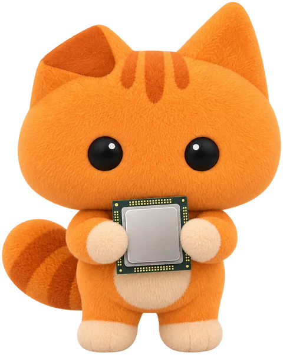

Music playing
Focus timer
Volume
Headphones
Money in
Prayer times
Over a game
System › Games

Classic
Oyen
Glass, light
Glass, dark
Pill
Pill, playing
As it happens
Oyenza tab
Before each prayer
Prayer tab


 Music playing
Music playing Focus timer
Focus timer Volume
Volume Headphones
Headphones Money in
Money in Prayer times
Prayer times

 Over a game
Over a game System › Games
System › Games


 Classic
Classic Oyen
Oyen Glass, light
Glass, light Glass, dark
Glass, dark Pill
Pill Pill, playingAs it happens
Pill, playingAs it happens Oyenza tabBefore each prayer
Oyenza tabBefore each prayer Prayer tab
Prayer tab